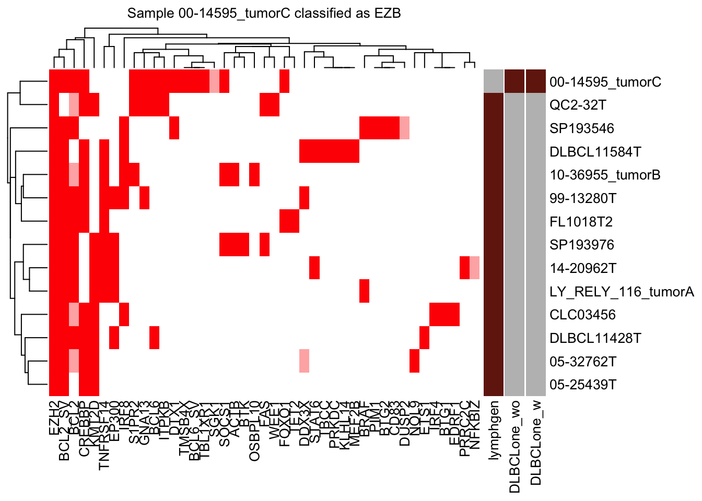

DLBCLone: Full Walkthrough
A step by step example workflow from start to finish
Training data
For simplicity, we’ll skip feature selection and train our new model using a set of genes that have been pre-selected for you based on a model described in the DLBCLone preprint. The code below shows how to infer what features were used in training our model, starting with the column names of the model’s features (model_feats).
SSM features
# Full set of genes considered for SSM
model_genes = grep("_SV|HOTS",model_feats,invert=T,value=T)
model_genes [1] "ACTB" "ACTG1" "BCL10" "BCL2" "BCL2L1" "BCL6"
[7] "BIRC3" "BRAF" "BTG1" "BTG2" "BTK" "CD19"
[13] "CD70" "CD79B" "CD83" "CDKN2A" "CREBBP" "DDX3X"
[19] "DTX1" "DUSP2" "EDRF1" "EIF4A2" "EP300" "ETS1"
[25] "ETV6" "EZH2" "FAS" "FCGR2B" "FOXC1" "FOXO1"
[31] "GNA13" "GRHPR" "HLA-A" "HLA-B" "HNRNPD" "IRF4"
[37] "IRF8" "ITPKB" "JUNB" "KLF2" "KLHL14" "KLHL6"
[43] "KMT2D" "MEF2B" "MPEG1" "MYD88" "NFKBIA" "NFKBIE"
[49] "NFKBIZ" "NOL9" "NOTCH1" "NOTCH2" "OSBPL10" "PIM1"
[55] "PIM2" "PRDM1" "PRDM15" "PRKDC" "PRRC2C" "PTPN1"
[61] "RFTN1" "S1PR2" "SETD1B" "SGK1" "SOCS1" "SPEN"
[67] "STAT3" "STAT6" "TBCC" "TBL1XR1" "TET2" "TMEM30A"
[73] "TMSB4X" "TNFAIP3" "TNFRSF14" "TOX" "TP53" "TP73"
[79] "UBE2A" "WEE1" "XBP1" "ZFP36L1" Hotspot features
# Genes with hotspots considered
hotspot_features = grep("HOTS",model_feats,invert=F,value=T)
hotspot_features[1] "MYD88HOTSPOT"SV features
SV_genes = grep("_SV",model_feats,invert=F,value=T)
SV_genes[1] "BCL2_SV" "BCL6_SV"Load and subset the training data
The GAMBLR.predict package is bundled with base-3 mutation status matrix for the training data set. The code below shows how to load that into a data frame (setting sample_id as the row names) and subset it to only the features described above.
best_opt_model_matrix <- readr::read_tsv(
system.file("extdata/all_full_status.tsv",
package = "GAMBLR.predict")) %>%
tibble::column_to_rownames("sample_id")
# keep only the columns you want to use for your model
best_opt_model_matrix = best_opt_model_matrix %>%
select(all_of(model_genes),all_of(hotspot_features),all_of(SV_genes))To train a model, we also need ground truth labels. These come from another bundled file, which is the sample metadata for the samples in the mutation matrix we just loaded.
dlbcl_meta <- readr::read_tsv(system.file("extdata/dlbcl_meta_with_dlbclass.tsv",package = "GAMBLR.predict"))
# remove rows that don't correspond to unambiguous classes (i.e. drop composites)
dlbcl_meta_clean <- filter(
dlbcl_meta,
lymphgen %in% c("MCD","EZB","BN2","N1","ST2","Other")
)
make_and_annotate_umap
make_umap_scatterplot
make_umap_scatterplot(
mu_everything$df,
drop_other = F
)
DLBCLone_optimize_params
all_features_optimized = DLBCLone_optimize_params(
mu_everything$features,
dlbcl_meta_clean,
umap_out = mu_everything,
truth_classes = c("MCD","EZB","BN2","N1","ST2","Other"),
optimize_for_other = T,
min_k=5,
max_k=13
)make_alluvial
DLBCLone with outgroup optimization (“wo”) w for weighted, o for optimized for other.
make_alluvial(all_features_optimized,pred_column = "DLBCLone_wo",pred_name = "DLBCLone_wo")
DLBCLone_predict
predicting one training sample
test_sample = "00-14595_tumorC"
pred_train <- DLBCLone_predict(
mutation_status = best_opt_model_matrix[test_sample,],
optimized_model = all_features_optimized
)
knitr::kable(head(pred_train$prediction))| sample_id | predicted_label | confidence | other_score | neighbor_id | neighbor | distance | label | other_neighbor | vote_labels | weighted_votes | neighbors_other | neighborhood_otherness | other_weighted_votes | total_w | pred_w | V1 | V2 | .id | EZB_NN_count | MCD_NN_count | ST2_NN_count | N1_NN_count | BN2_NN_count | Other_NN_count | top_group | EZB_score | MCD_score | ST2_score | N1_score | BN2_score | Other_score | top_score_group | top_group_score | top_group_count | Other_count | by_vote | by_vote_opt | by_score | score_ratio | by_score_opt | DLBCLone_w | DLBCLone_wo |
|---|---|---|---|---|---|---|---|---|---|---|---|---|---|---|---|---|---|---|---|---|---|---|---|---|---|---|---|---|---|---|---|---|---|---|---|---|---|---|---|---|---|---|
| 00-14595_tumorC | EZB | 1 | 0 | DLBCL11584T,CLC03456,DLBCL11428T,05-32762T,LY_RELY_116_tumorA,99-13280T,05-25439T,QC2-32T,SP193546,SP193976,14-20962T,FL1018T2,10-36955_tumorB | 1112,351,995,85,1265,416,80,1322,1182,1164,247,89,172 | 0.203,0.223,0.231,0.259,0.265,0.293,0.297,0.306,0.321,0.34,0.345,0.349,0.352 | EZB,EZB,EZB,EZB,EZB,EZB,EZB,EZB,EZB,EZB,EZB,EZB,EZB | EZB | 46.055835675141 | 0 | 0 | 0 | 46.05584 | 46.05584 | -3.826784 | 2.487499 | 1 | 13 | 0 | 0 | 0 | 0 | 0 | EZB | 46.05584 | 0 | 0 | 0 | 0 | 0 | EZB | 46.05584 | 13 | 0 | 13 | EZB | EZB | Inf | EZB | EZB | EZB |
make_neighborhood_plot
make_neighborhood_plot(
single_sample_prediction_output = pred_train,
this_sample_id = "00-14595_tumorC",
prediction_in_title = TRUE,
add_circle = TRUE,
label_column = "DLBCLone_wo"
)
nearest_neighbor_heatmap
nearest_neighbor_heatmap(
this_sample_id = "00-14595_tumorC",
DLBCLone_model = pred_train,
font_size = 10
)